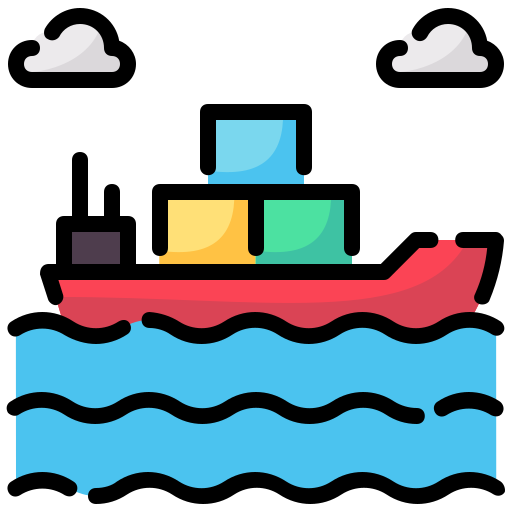
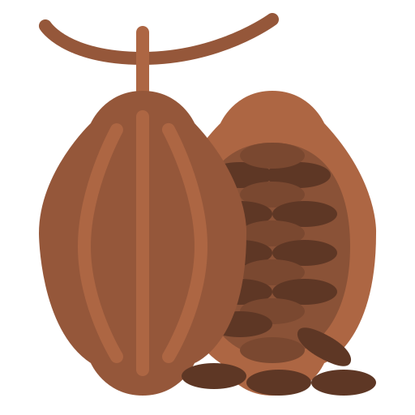
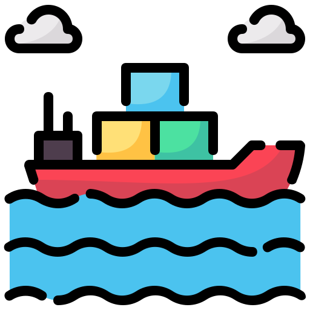
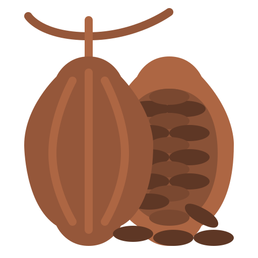

Conectamos tu trabajo con el mundo
Desde agricultores locales hasta compradores globales: AgroConnect es el puente que transforma la producción en oportunidades.
¿Qué es AgroConnect?
AgroConnect es una plataforma digital que une a productores agrícolas con compradores, distribuidores y consumidores. Facilitamos la visibilidad, la trazabilidad y el comercio justo.
- 🌱 Visibilidad global para productores locales
- 📦 Acceso directo a productos frescos y sostenibles
- 🔗 Transparencia, trazabilidad y confianza en cada transacción
¿Cómo funciona AgroConnect?
1. Publica tu producto
El agricultor sube su producto y detalla su origen, calidad y cantidad disponible.
2. Conexión directa
El comprador encuentra fácilmente lo que busca y contacta al productor sin intermediarios.
3. Negociación y acuerdo
Ambas partes establecen condiciones, precios y tiempos de entrega de forma transparente.
4. Seguimiento y logística
AgroConnect facilita el envío y monitorea el proceso hasta la entrega final.
Interacción entre vendedor y comprador
Conecta directamente con productores y compradores de todo el mundo. Crea tu cuenta, participa en negociaciones y gestiona tus envíos desde un solo lugar.
Una vez registrado, podrás comunicarte mediante mensajes directos, recibir notificaciones de interés y acceder a tus transacciones seguras.

Historias Reales
Conoce cómo AgroConnect está transformando el campo y los negocios sostenibles 🌍
“Gracias a AgroConnect, mis frutas llegan a restaurantes en Bilbao sin intermediarios. Ahora tengo clientes constantes y mejores precios.”
– Marta, productora en León“Encontré proveedores confiables y sostenibles para mi tienda ecológica. AgroConnect ha hecho simple lo que antes era complicado.”
– Javier, comprador en Madrid“Pude exportar mi café orgánico a nuevos mercados internacionales con transparencia y confianza. ¡Una herramienta que realmente conecta!”
– Juan, productor en Colombia